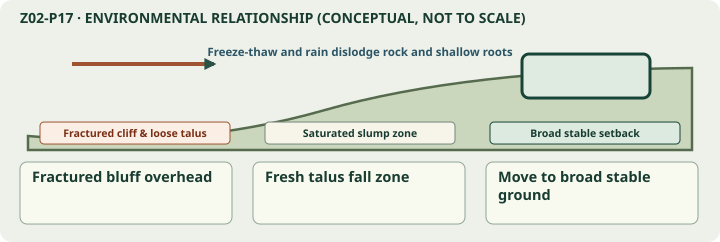

Z02-P17 · Shelter and housing · New manuscript
Assess rockfall zones, cliff bases and saturated hillsides
Reject unstable bluffs, talus aprons and rain-soaked slopes where falling rock or soil slumps threaten camp.
When it applies · Bluffs, canyons, rocky lake shores, road cuts and steep forested hillsides, especially during freeze-thaw cycles or heavy rain.
Equipment · Daylight inspection vantage, map and headlamp for pre-dark checks.

Actions
- Scan above the site for fractured cliff faces, loose boulders perched on soil, fresh rock debris at the base and leaning trees rooted in shallow wet earth.[E03, E13, ED]
- Recognize that freeze-thaw mornings, heavy rainfall, root saturation and wildlife or hikers above can dislodge rocks without warning.[E03, E13, E04]
- Move well clear of steep talus aprons and undercut embankments onto broad, stable ground with unobstructed exits.[E03, E04, ED]
Failure recognition · Tucked under an inviting cliff overhang for rain cover without noticing fresh chipped rock fragments and dripping fractured ledges overhead.[E03, E13, ED]
Verify · Confirm zero fresh rockfall debris, overhanging loose stone or saturated slump scars upslope of the shelter and exit path.[E03, E13, ED]
Stop or change course · Reject any cliff overhang, boulder field base or visibly slumping hillside regardless of how well it blocks rain or wind.[E03, E13]
Evidence and editorial notes
- E03 · NPS · Finding and Setting Up a Campsite (current web edition)
- Section: Finding a campsite · Conditions: Legal established or designated campsite
Support: Choose a durable legal site suited to the conditions. Campsite rules and physical risks vary by park.
Limitations: Established sites can still develop new hazard trees or flood risk after storms. · Conflicting evidence: None; requires live site inspection even at designated pads.
Editorial note: First gate of shelter site selection. · Specialist reviewer: Land management and wilderness shelter
Primary source · checked 2026-11-24 - E04 · NWS · Flood Safety: Key Points for Camping and Hiking (agency PDF)
- Section: Before and during camping; know your surroundings · Conditions: Stream valleys and runoff channels subject to flash flooding
Support: Choose higher ground away from water channels. Rain far upstream can drive rapid flooding.
Limitations: Dry streambeds and gentle swales can flood rapidly without local rainfall. · Conflicting evidence: None; aligns with NWS-FLOOD.
Editorial note: Core hydrological exclusion rule for shelter placement. · Specialist reviewer: Emergency management and hydrology
Primary source · checked 2026-11-24 - E13 · USDA Forest Service · Hazard Tree Safety (agency PDF)
- Section: What You Can Do to Reduce Risk · Conditions: Forest campsites and stops
Support: Look for dead trees and falling material. Stay away from hazardous trees and move away when winds make the site unsafe.
Limitations: Internal decay and root rot can cause live-looking trees to fail in saturated soils or high wind. · Conflicting evidence: Does not specify a universal exclusion radius; tree height and slope govern fall reach.
Editorial note: Prevents false precision on fall-zone distance while requiring overhead screening. · Specialist reviewer: Land management and arboriculture safety
Primary source · checked 2026-11-24
Source lineage · NPS campsite selection and USFS hazard guidance; new manuscript · Classification · New manuscript.